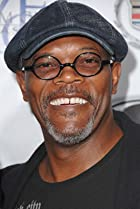
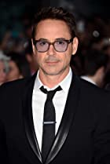
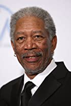
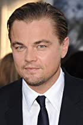
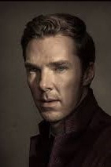

|  |
Samuel L. Jackson |
| Samuel L. Jackson (Elijah Price) si-a pus o amprenta incredibila asupra cinematografiei americane cu rolul lui Jules din filmul "Pulp Fiction" pentru care a primit nominalizari la Oscar si la Globul de Aur pentru 'Cel mai bun actor intr-un rol principal'. |
|  |
Robert Downey Jr. |
| Robert Downey Jr. s-a nascut in New York pe 4 aprilie 1965. A aparut pentru prima data intr-un film la varsta de cinci ani, era un catelus in filmul tatalui sau, Pound (1970). |
|  |
Morgan Freeman |
| MORGAN FREEMAN a câștigat un premiu al Academiei pentru cel mai bun rol secundar în filmul lui Clint Eastwood, “Million Dollar Baby,” pentru care a mai primit și un premiu Screen Actors Guild (SAG) și o nominalizare la Globul de Aur. Filmul a marcat cea de-a doua sa colaborare cu regizorul Clint Eastwood, după rolul lui Freeman din filmul “Unforgiven,” premiat cu Oscar la categoria cel mai bun film. |
|  |
Leonardo DiCaprio |
| DiCaprio este fiul unui autor american de comedii și are o origine germano-italiană (dinspre mama). Se spune că numele i-a fost pus sub impresia puternică pe care picturile lui Leonardo da Vinci au lăsat-o asupra mamei lui când, insărcinată fiind, vizita Italia. |
|  |
Benedict Cumberbatch |
| Benedict Cumberbatch s-a nascut pe 19 iulie 1976, la Londra. Este fiul actorilor Carlton Cumberbatch si Wanda Ventham. Bunicul sau, Henry Carlton Cumberbatch, o figura proeminenta a societatii londoneze din acele vremuri, a fost un decorat ofiter de submarin, ce a luptat in ambele Razboaie Mondiale. Iar strabunicul sau, Henry Arnold Cumberbatch, a fost Consulul General al Marii Britanii in Turcia. |